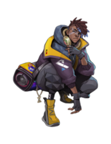

-
Kayn
assassino/lutador
.png)
O CEIFADOR DAS SOMBRAS
Inigualável praticante da letal magia sombria, Shieda Kayn luta para alcançar seu verdadeiro destino: um dia comandar a Ordem das Sombras rumo a uma nova era de supremacia ioniana. Ele empunha uma senciente arma darkin chamada Rhaast, indiferente à maquiavélica degradação que ela causa em seu corpo e mente. Só duas coisas podem acontecer: ou Kayn faz a arma obedecê-lo... ou a foice maligna o consumirá completamente, preparando o terreno para a destruição de toda Runeterra.
-
Jhin
Atirador
O VIRTUOSO
Jhin é um meticuloso psicopata criminoso que acredita que o assassinato é uma arte. Outrora um prisioneiro ioniano, mas libertado por membros obscuros do conselho regimental de Ionia, o assassino serial agora trabalha como assassino de seu conluio. Usando a própria arma como pincel, Jhin cria obras artisticamente brutais, horrorizando vítimas e espectadores. Ele sente um cruel prazer ao fazer suas encenações nefastas, tornando-o a escolha ideal para transmitir a mais poderosa das mensagens: o terror.
-
Ekko
assassino
O RAPAZ QUE ESTILHAÇOU O TEMPO
Um prodígio das violentas ruas de Zaun, Ekko manipula o tempo para reverter qualquer situação a seu favor. Usando sua própria invenção, o Revo-Z, ele explora as possíveis bifurcações da realidade para criar o momento perfeito. Embora valorize muito sua liberdade, quando algo ameaça seus amigos, ele não mede esforços para defendê-los. Para meros observadores, Ekko parece conseguir o impossível sempre de primeira.
-
Sett
Lutador
O CHEFE
Líder de parte do próspero submundo do crime em Ionia, Sett deve todo o seu sucesso à guerra contra Noxus. Mesmo estreando como um simples desafiante nas arenas de combate em Navori, ele logo conquistou notoriedade com sua força bruta e capacidade de suportar dor contínua e extrema. Agora, após alcançar todos os níveis dos combatentes locais, Sett forjou seu lugar no topo e reina sobre as arenas nas quais ele já lutara.
-
Morgana
Mago
A CAÍDA
Dividida entre sua natureza mortal e celestial, Morgana prendeu suas asas para preservar sua humanidade e inflige sua dor e amargura nos desonestos e corruptos. Ela rejeita as leis e tradições que considera injustas e luta pela verdade nas sombras de Demacia com escudos e correntes de fogo sombrio, ainda que alguns tentem reprimi-la. Acima de tudo, Morgana acredita que até os banidos e exilados podem um dia se levantar.